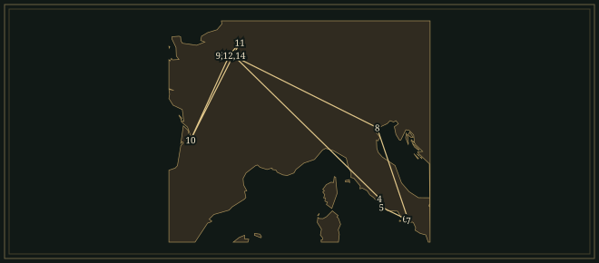

GeorgesBizet
A factory worker sings that love obeys no law, while four bass notes beneath her voice keep the dance going.
- Trained
- Paris Conservatoire; piano with Antoine Marmontel, composition with Fromental Halévy
- Stages
- Bouffes-Parisiens · Théâtre-Lyrique · Opéra-Comique
- Turning points
- Prix de Rome 1857 · Les Pêcheurs de perles 1863 · Carmen 1875
- Away from opera
- Jeux d’enfants for piano duet · L’Arlésienne for the spoken theatre
Life
Outside the bullring, Carmen tells José that she will not return to him. Inside, the spectators cheer Escamillo. Bizet keeps both scenes audible: the tune of the Toreador Song is heard from inside the arena while José pleads with Carmen and then kills her. The melody first appeared in the opera as Escamillo’s song to the crowd. Carmen opened at the Paris Opéra-Comique on 3 March 1875. Three months later its composer was dead, aged thirty-six. He had spent most of his working life trying to get an opera to stay on the stage.
ParisFamily and the Paris Conservatoire
Georges Bizet was born in Paris on 25 October 1838. His father Adolphe taught singing; his mother Aimée played the piano, and her brother François Delsarte was a singing teacher. Bizet entered the Conservatoire in October 1848, before his tenth birthday. Antoine Marmontel taught him piano, François Benoist organ, and Fromental Halévy composition. He won prizes for piano, fugue and organ. Charles Gounod was an especially important example to him, as a composer who made a career in the theatre without giving up the suppleness of a sung phrase.
In October 1872 Bizet told Gounod, “You were the beginning of my life as an artist. I come from you.” Gounod’s influence can already be heard in Bizet’s Symphony in C, written in 1855, when he was a teenager, after he had arranged Gounod’s D-major Symphony for piano duet. Bizet’s score was not performed during his lifetime; its first public performance was given in Basel in 1935. His early operatic work reached an audience much sooner. His one-act Le Docteur Miracle, which includes a quartet in praise of an omelette, shared first prize with Charles Lecocq’s setting in Offenbach’s competition and was staged at the Bouffes-Parisiens in April 1857.
RomePrix de Rome and Don Procopio
That summer Bizet won the Prix de Rome with the cantata Clovis et Clotilde. Early in 1858 he reached the Villa Medici. In Italy he travelled to Naples and Pompeii in 1859, and to Venice with Ernest Guiraud on the way home in 1860. He wrote Don Procopio, an Italian comic opera whose ensembles follow the manner of Rossini and Donizetti. He sent it to the French Academy, which expected a mass from a first-year pensioner.
Back in Paris in 1860, he earned money by teaching, rehearsing and making piano arrangements for publishers. He had the technique for a career as a pianist, but he gave more of his attention to composition. The publishing work brought other composers’ orchestral scores under his hands, and reducing a score to the keyboard required decisions about which line, bass or inner part had to be kept. His own catalogue filled with projected operas, abandoned plans and music reused when an opportunity changed.
The theatreTheatre works, 1863–1872
Les Pêcheurs de perles was commissioned in 1863 and written that spring and summer. Its imagined Ceylon belongs to the Parisian theatre’s taste for distant settings. In “Au fond du temple saint” two men recall the same woman; later Nadir sings a romance. The work received eighteen performances at the Théâtre-Lyrique. Berlioz praised the young composer, but the production did not establish him. Another Théâtre-Lyrique opera, La Jolie Fille de Perth, followed in 1867; it has dances and a serenade, and its story turns on mistaken identity.
In June 1869 Bizet married Geneviève Halévy, the daughter of his former teacher. Their son Jacques was born in 1872. Between those events came the Franco-Prussian War and the siege of Paris, during which Bizet served in the National Guard. During the Commune he spent time outside the capital, at Compiègne and Le Vésinet. In 1871 he composed Jeux d’enfants, twelve pieces for piano duet whose subjects include a swing, a spinning top, a doll and a procession. The two players share the keyboard and divide the material of each piece between them.
In 1872 Bizet had two further disappointments in the theatre. Djamileh, a one-act opera set in Cairo, had eleven performances at the Opéra-Comique. Daudet’s spoken play L’Arlésienne also did poorly. Bizet wrote its incidental music for a small theatre orchestra that included a saxophone, cor anglais, strings, piano and percussion. He took four movements from the score to make a concert suite, which was a success that November.
CarmenCarmen at the Opéra-Comique
The Opéra-Comique commission that became Carmen dated from 1872. Henri Meilhac and Ludovic Halévy made the libretto from Prosper Mérimée’s novella; Bizet worked on the music in 1873–74 and orchestrated it at Bougival beside the Seine. He had never visited Spain. His Seville was drawn from reading, theatrical invention and selected musical borrowings, including Sebastián Iradier’s El arreglito. From that song he made the Habanera, giving Carmen a chromatically descending melody above a repeated dance bass. He wrote its words himself.
The rehearsals involved more than learning notes. The chorus had to act as factory workers, smoke and fight, and the theatre’s directors were worried about a risqué heroine who is killed on stage. Célestine Galli-Marié, the first Carmen, and Paul Lhérie, the first José, defended Bizet’s conception. The score gives Carmen several kinds of address: the Habanera is a calculated public display, the Seguidilla an intimate persuasion, and in the card scene she slowly recognises her death. José has music of great tenderness, and in the final scene Carmen still refuses him.
1875Carmen, première and reception
The première met hostility and incomprehension as well as admiration. The familiar story of an opera rejected and withdrawn is misleading: Carmen received forty-five performances in 1875 and three more in 1876. Shortly before his death Bizet was planning sung recitatives for a Vienna production. He died at Bougival on 3 June 1875, following illness; the reception of the opera does not explain his death. Vienna staged the work that October. Its continuing success brought revisions and rival editions.
Bizet did not stop the festivities to make room for the murder. The crowd goes on celebrating, and the refrain heard earlier returns during the killing. Making a familiar tune return in a changed dramatic situation was central to his writing for the theatre.
Places

All 14 places, with sources
- Paris · 1838-10-25 · born
Born in Paris to Adolphe Bizet and Aimée Delsarte. The marker shows the city, not the family home.
- Paris Conservatoire · 1848-10-09–1857 · studied
Enrolled before his tenth birthday; studied piano with Marmontel, organ with Benoist and composition with Fromental Halévy. Marker at the historic Conservatoire site.
Hugh Macdonald — Bizet: Brief Biography, Conservatoire years · Palazzetto Bru Zane — Georges Bizet à Paris, the Conservatoire
- Bouffes-Parisiens, Paris · 1857-04-09 · premiere
First performance of his prize-winning one-act opera; Bizet’s setting alternated with Charles Lecocq’s setting of the same libretto. Le Docteur Miracle.
Hugh Macdonald — Bizet Catalogue: Le Docteur Miracle, performances
- Villa Medici, Rome · 1858–1860 · lived
Prix de Rome pensioner at the French Academy; composed Don Procopio and sent it home in place of the expected mass. Don Procopio.
- Anzio · 1859 · travelled
An excursion in the second year of his Rome residency; city-level marker.
- Naples · 1859 · travelled
Visited southern Italy during his second year at the Villa Medici; city-level marker, without an asserted lodging address.
- Pompeii · 1859 · travelled
Visited Pompeii during the journey that also took him to Naples. The marker is placed at the archaeological site and does not show a route within it.
- Venice · 1860-09 · travelled
Visited with Ernest Guiraud on his return journey to France; city-level marker.
Hugh Macdonald — Bizet: Brief Biography, departure from Italy
- Le Vésinet · 1864–1871 · lived
Spent summers in a cottage built by his father in the mid-1860s and returned during the Commune in 1871. These were intermittent stays. The marker shows the town and does not identify a particular cottage.
- Bordeaux · 1871 · travelled
After the armistice he visited his mother-in-law with Geneviève before returning to Paris. City-level marker.
Hugh Macdonald — Bizet: Brief Biography, the war and armistice
- Compiègne · 1871 · lived
One of his places of refuge outside Paris during the Commune; he also stayed at Le Vésinet. City-level marker.
- Bougival · 1874 · lived
Worked on the orchestration of Carmen beside the Seine. This marker identifies Bougival, not an exact room or manuscript location. Carmen.
Hugh Macdonald — Bizet Catalogue: Carmen, letters of May and August 1874
- Opéra-Comique, Salle Favart, Paris · 1875-03-03 · premiere
First performance, with Célestine Galli-Marié as Carmen and Paul Lhérie as José. The second Salle Favart stood on this site; the present theatre is later. Carmen.
Palazzetto Bru Zane — Carmen: première at Salle Favart II · Hugh Macdonald — Bizet Catalogue: Carmen, first performance
- Bougival · 1875-06-03 · died
Died aged thirty-six, during Carmen’s first Paris run. City-level marker.
Influences
Teachers, encounters and borrowed music, each with its account and sources in the Web of Influence.
Influences received
Influences passed on
The Sound
𝄾Rhythm
The Habanera’s bass repeats four attacks: dotted quaver, semiquaver, quaver, quaver. Carmen’s voice descends in semitones above it, against a dance rhythm that does not change.
♮Public songs
The Habanera moves from D minor into a D-major refrain. Escamillo’s couplets make a similar turn, from F minor to F major. Both characters sing to a room full of listeners, and in both songs the change of mode turns a narrative into a tune that other people can take up.
𝄞Small orchestras
L’Arlésienne is scored for a small theatre orchestra that includes a saxophone, a cor anglais, a piano and a Provençal tambourin. The concert suites use a larger orchestra.
𝄐The exposed voice
José’s Flower Song asks for pianissimo on a high B♭ near its close. In Les Pêcheurs de perles, Nadir’s “Je crois entendre encore” is also set as a quiet, sustained line.
𝄋Two simultaneous scenes
The last duet of Carmen is interrupted by the bullring crowd. Escamillo’s refrain returns offstage while José confronts Carmen outside, and the two are heard together.
Works
A selection from the composer’s works.
- 1855Symphony in COrchestraA Conservatoire student’s four-movement symphony, composed shortly after his seventeenth birthday. First performed by Felix Weingartner in Basel in 1935.
- 1856; staged 1857Le Docteur MiracleOne-act comic opera; four singers and orchestraAn omelette is the subject of an elaborate quartet. Bizet and Charles Lecocq shared the prize in Offenbach’s competition; their settings alternated at the Bouffes-Parisiens.
- 1857Clovis et ClotildeCantata; soprano, tenor, bass and orchestraThe Prix de Rome cantata that won him his stay at the Villa Medici.
- 1858–59Don ProcopioItalian comic opera in two actsA Rome submission, sent in place of the expected mass. Its characters, an old bachelor and young lovers, belong to Italian opera buffa. The première took place in 1906.
- 1863Les Pêcheurs de perlesOpera in three actsNadir, Zurga and Leïla in an imagined Ceylon. The friendship duet and Nadir’s romance are famous; the jealousy around them is in the complete opera.
- 1866; staged 1867La Jolie Fille de PerthOpera in four actsA loose adaptation of Walter Scott, with a serenade, a gypsy dancer and mistaken identities. Music from its dance scene was later used in Guiraud’s second L’Arlésienne suite.
- 1868Variations chromatiquesPianoFifteen variations on a chromatic theme. The theme and the first seven variations are in the minor; the remaining eight are in the major.
- 1871Jeux d’enfantsOp. 22Piano duet; selections orchestrated as Petite SuiteTwelve pieces for four hands on games and toys, from the swing to the ball. Bizet orchestrated five of them as the Petite Suite.
- 1871; staged 1872DjamilehOp. 24One-act operaLouis Gallet’s libretto after Musset’s Namouna tells of an enslaved woman who tries to make a capricious prince recognise her. The chromatic score preceded Carmen at the Opéra-Comique.
- 1872L’ArlésienneOp. 23Incidental music for Daudet’s play; first orchestral suiteShort pieces and melodramas for spoken theatre. Bizet made the first concert suite himself; the familiar second suite was assembled by Ernest Guiraud in 1879.
- 1873–75CarmenOpera in four acts; original version with spoken dialogueA cigarette-factory worker, a soldier and a bullfighter. The Habanera, the Seguidilla, the Flower Song, the card scene and the final confrontation belong to one continuous drama.Recordings in the Hall
In the Score
Short examples, engraved and playable.
Carmen · HabaneraFour attacks over the same bass
Carmen · Toreador Song — schematicChord altered by one note
Sister Arts

The first Carmen, posed in costume in a photographic studio. The image records a performer’s construction of the role and does not show the première. Galli-Marié helped defend Bizet’s conception during the difficult rehearsals.

Leray’s poster advertised the new opera through a recognisable theatrical Spain. Choudens published it and Lemercier printed it.
Recommended recordings
- CarmenVictoria de los Ángeles, Nicolai Gedda, Janine Micheau, Ernest Blanc; French Radio forces, Thomas BeechamEMI / Warner Classics · 1958–59The first complete set to own: de los Ángeles keeps the heroine’s phrases light and mobile, and Beecham gives the dances room to breathe.
- CarmenMaria Callas, Nicolai Gedda, Andréa Guiot, Robert Massard; Paris Opéra Orchestra, Georges PrêtreEMI / Warner Classics · 1964A contrasting recording, with a Carmen built on the inflection of the words. Callas never sang the role on stage; this is a studio performance.
- Les Pêcheurs de perlesNicolai Gedda; Opéra-Comique chorus and orchestra, Pierre DervauxEMI / Warner Classics · 1960This is a complete recording of the opera; the famous duet is also widely available on compilations. Nicolai Gedda sings Nadir, and the romance is part of a drama of jealousy and loyalty. Dervaux conducts at a theatrical pace.
Where to hear more
- Carmen — complete opera1873–75Victoria de los Ángeles, Nicolai Gedda, Janine Micheau, Ernest Blanc; French Radio chorus and orchestra; Thomas Beecham · EMI / Warner Classics · 1958–59, Salle Wagram, Paris
The two acoustic arias in the Hall introduce Carmen and Escamillo separately. The complete opera supplies José’s Flower Song, the cards and the final duet, in which the refrain of the bullring crowd is heard during the murder scene. Beecham’s set is the first choice.
- Les Pêcheurs de perles — complete opera1863Nicolai Gedda; Opéra-Comique chorus and orchestra; Pierre Dervaux · EMI / Warner Classics · 1960
Nadir’s romance and the conflict around Leïla are heard only in the complete work, beyond the friendship duet. Dervaux’s recording, with Gedda, is an introduction to Bizet’s earlier theatre. Warner’s page identifies it as the complete performance, not a highlights compilation.
These recordings are under copyright, so the Hall cannot play them; the links go to the labels’ and artists’ own uploads and to streaming services.
Lineage
Bizet explicitly acknowledged Gounod as his model; Halévy was his teacher. Don Procopio descends from Italian buffa. Among the later connections, Tchaikovsky admired Carmen, Guiraud prepared recitatives and the second L’Arlésienne suite, and Balanchine took the youthful Symphony in C into the ballet theatre in 1947.
Further reading
- Macdonald, Hugh. Bizet. New York: Oxford University Press, 2014.Biography
The standard account of how a prize-winning pianist spent his adult life trying to establish himself in the theatre. Use with Macdonald’s online catalogue where a familiar title covers an unfinished project or a later editor’s intervention.
- McClary, Susan. Georges Bizet: Carmen. Cambridge Opera Handbooks. Cambridge: Cambridge University Press, 1992.Opera study
Asks how the opera makes gender, class and its imagined Spain audible. Places the score beside Mérimée’s novella, its reception and later adaptations. Especially useful to read before returning to the final duet.
- Curtiss, Mina. Bizet and His World. New York: Alfred A. Knopf, 1958.Documentary biography
For the people and working conditions behind the operas: letters, family relationships, publishers and Parisian theatres. Its documentary material remains valuable; dates and claims about musical versions should be checked against newer scholarship.
- Bizet, Georges. Lettres à un ami, 1865–1872. Edited by Edmond Galabert. Paris: Calmann-Lévy, 1909.Letters
For Bizet writing about composition and the practical frustrations of his career before Carmen. The letters were edited and published posthumously; they do not form a diary or an unmediated account of every event.
- Macdonald, Hugh. The Bizet Catalogue. Washington University in St Louis. Online thematic catalogue.Work catalogue
For checking what Bizet wrote: composition dates, manuscripts, early editions, letters, premières and later alterations. The Carmen and L’Arlésienne entries separate the composer’s work from recitatives, suites and revisions made after his death.
Cite this page
Contrapunctus. “Georges Bizet.” Accessed 20 October 2026. https://mottopanikeiku.github.io/contrapunctus/composers/bizet.html.
@misc{contrapunctus-composers-bizet,
author = {{Contrapunctus}},
title = {Georges Bizet},
howpublished = {\url{https://mottopanikeiku.github.io/contrapunctus/composers/bizet.html}},
note = {Accessed 2026-10-20}
}